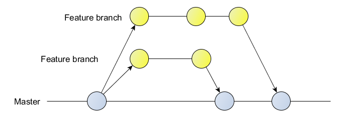

A basic git workflow is the feature branch workflow. All feature (or task, or story) developments are taken place in a dedicated branch (the feature branch).
The stories/features branch exist as long as the feature is in development.
At the end of the development, the branch is usually submitted for review (pull request) and merged to master.

Some layers can be added to this model:
The integration/dev branch : It hold all feature branches commits, allow to check all pieces of dev work together.
There could be variations on how and when to merge:
- merge to dev branch while the story is still in progress and merge dev branch to master when the story is complete
- merge the dev branch to master each time it pass the CI test successfully
- merge the dev branch to master when the product owner accept the user story implementation
The hotfix branch: It hold commits for severe bugs (ie. production bugs) and are merged to master and to the branches "above" (dev/integration and stories/features branches).
The release branch : It support preparation for a new production release. The dev/integration is merged to the release branch. Commits after a merge concern bugfixes of stories/features. These commits are also merged to the branches above.
See Gitworklow Comparisons for more information.
Git workflows works well when interconnected code and infrastructure dependencies need to be managed and released in tandem.
In Continuous deployment/delivery, the latest code is integrated and deployed automatically to any production environment.
This usually mean submitting all pull requests to master.
Each commit is a potential release candidate and is then subject to a series of test and verification steps to vheck it is ready to deploy.
The challenge in continuous deployment is determining what needs to be released together without manual intervention.
Gitflow branching model vs "All to master":
Gitflow pros:
- High degree of control of release content
- Handle projects with many layers of complexity
Gitflow cons:
- Complex rollback of individual feature once it is released
- Large merge into master making it difficult to visualize changing over time
All to master pros:
- Simplicity of individual feature rollback
- Immediate release of newly developed and approved features
All to master cons:
- Master is a living entity on a software project and can be changed at any time; release tags are immutable.
- Difficult to coordinate simultaneous release of dependent code or infrastructure changes.
See Continuous Development for more on continuous development.